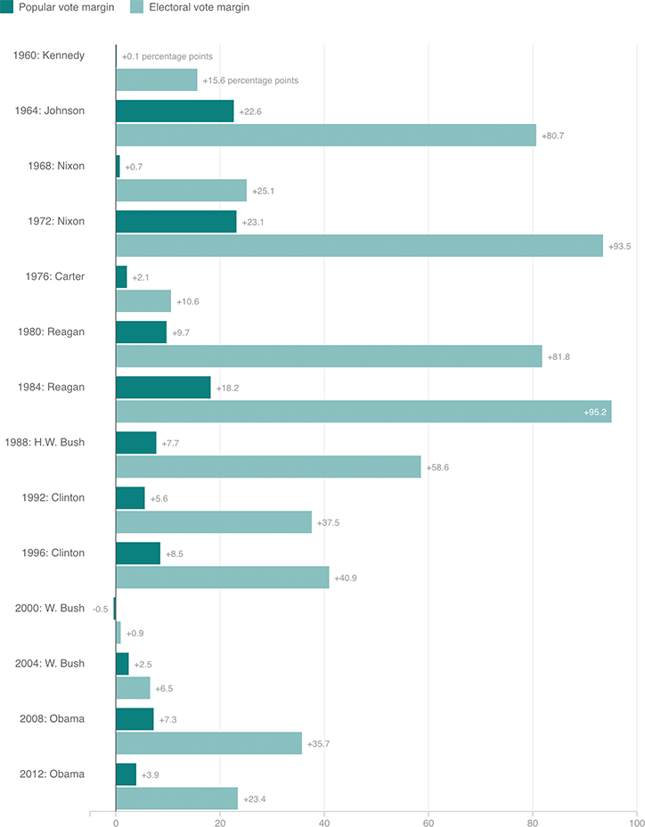

The Electoral College Turns Modest Wins Into Landslides
Presidential election victors often win by a larger margin in the Electoral College than in the popular vote. Notably, in 1984, Ronald Reagan beat Walter Mondale by about 18 percentage points in the popular vote (winning 59 percent of the vote to Mondale’s 41), but by 95.2 percentage points in the Electoral College (with 97.6 percent of the electoral vote (525) to Mondale’s 2.4 percent (13)). Below, the winning candidate’s margin of victory in the popular vote and Electoral College for each election year since 1960:
